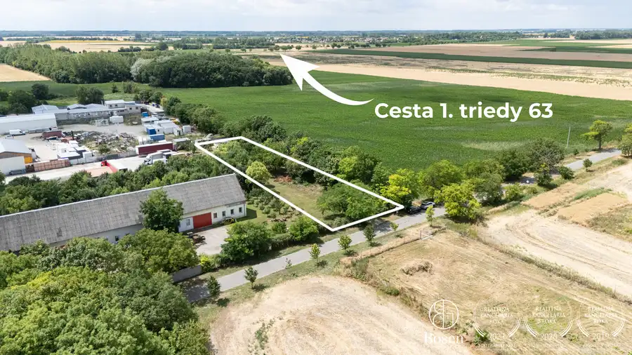
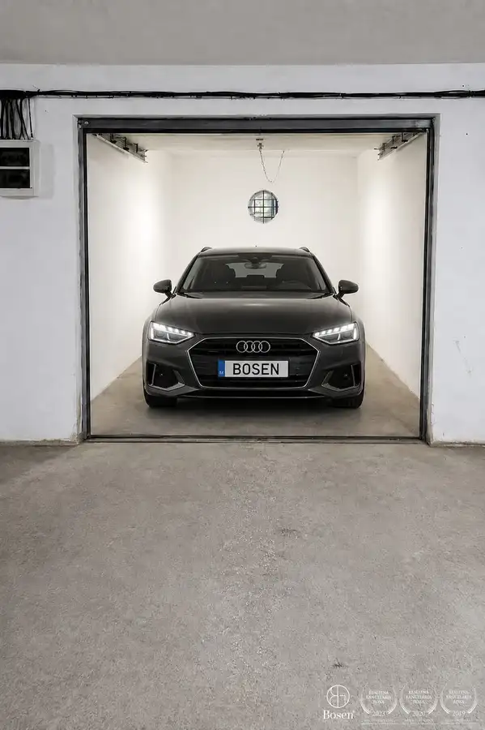
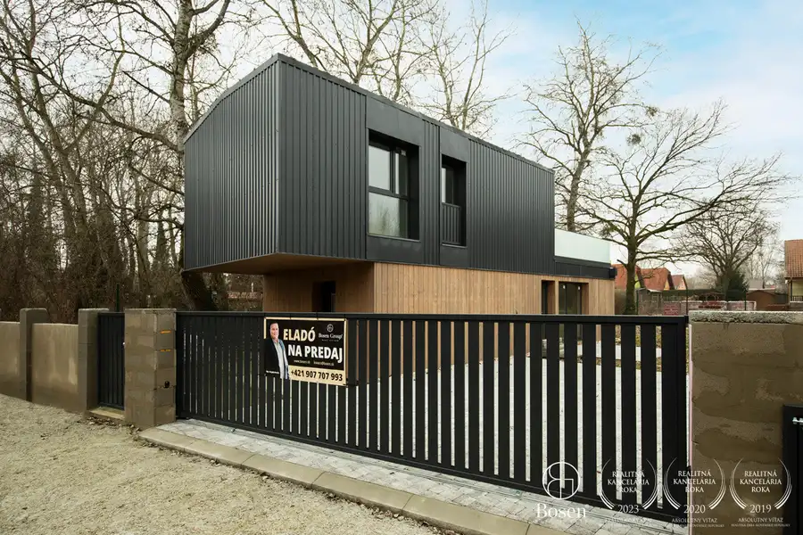

BOSEN | Na predaj priestranný rodinný dom s bazénom a saunou v obci Trhová Hradská
Trhová Hradská
- Plocha288 m²
- StavČiastočná rekonštrukcia
- VlastníctvoOsobné
- Energetická triedaB
O nehnuteľnosti
Bosen Group Dunajská Streda Vám exkluzívne ponúka na predaj dvojpodlažný rodinný dom s celkovou úžitkovou plochou 288 m², ktorý je kompletne podpivničený a nachádza sa na pozemku s rozlohou 600 m² v obľúbenej obci Trhová Hradská. Nehnuteľnosť bola postavená v roku 2000 a ponúka ideálne spojenie komfortu, relaxu a praktického bývania.Dispozícia:Pivnica: izba, práčovňa, kotolňaPrízemie: priestranná izba, kuchyňa, predsieň, samostatné WCPoschodie: 3 samostatné izby, predsieň, kúpeľňa, WCBenefity nehnuteľnosti:vonkajší bazén ideálny na letné dnisauna pre oddych a regeneráciukryté terasy poskytujúce súkromie a priestor na posedeniepokojná rezidenčná lokalita Trhová Hradskáslnečný pozemok s dostatkom priestoru na oddych aj záhradníčenieLokalita:Obec Trhová Hradská je vyhľadávanou lokalitou v okrese Dunajská Streda. Nachádza sa len 9 km od Dunajskej Stredy, kde nájdete kompletnú občiansku vybavenosť vrátane škôl, obchodov a termálneho kúpaliska. Vďaka rýchlostnej ceste R7 je zabezpečená rýchla dostupnosť do Bratislavy (cca 40 minút). Samotná obec ponúka pokojné a bezpečné prostredie, ktoré je ideálne pre rodinné bývanie.Maklér:Mgr. Gergely Kovács, riaditeľ pobočky BOSEN Dunajská Stredatel.: +421 907 707 993, e-mail: kovacs@bosen.skRealitná kancelária BOSEN GROUP je členom Realitnej únie SR a riadi sa jej Realitným kódexom. Uvedená cena je konečná, zahŕňa províziu realitnej kancelárie, právny servis zabezpečovaný advokátskou kanceláriou, úhradu základného správneho poplatku na katastri, poradenstvo k prevodu nehnuteľnosti a bezplatnú ponuku financovania prostredníctvom hypotéky.
Parametre
| Druh | Rodinný dom |
|---|---|
| Dátum zverejnenia | 27. 8. 2025 |
| Dĺžka pozemku | 30 |
| Energetická náročnosť | Z klasických materiálov |
| Energetický certifikát budovy | B |
| Energie | 200 |
| Orientácia | Južná |
| Plocha balkónu v m2 | 12 m² |
| Plocha pozemku | 600 m² |
| Plocha predzáhradky | 25 m² |
| Plocha terasy v m2 | 20 m² |
| Počet balkónov | 1 |
| Počet garáží | 1 |
| Počet izieb / miestností | 5 |
| Počet nadzemných podlaží | 2 |
| Počet pivníc | 2 |
| Počet podzemných podlaží | 1 |
| Rok kolaudácie | 2000 |
| Rok poslednej rekonštrukcie | 2015 |
| Rok výstavby | 2000 |
| Stav nehnuteľnosti | Čiastočná rekonštrukcia |
| Telekomunikácie | Telefón, Internet, Satelit, Káblová TV, Optická sieť |
| Terás | 2 |
| Terén pozemku | Rovinatý |
| Typ | Predaj |
| Typ konštrukcie | Tehlová |
| Vlastníctvo | Osobné |
| Vybavenie | Balkón, Terasa, Garáž, Pivnica, Špajza, Sklad, Technická miestnosť |
| Zariadenie | Čiastočne zariadené |
| Zastavaná plocha | 288 m² |
| Úžitková plocha | 288 m² |
| Šírka pozemku | 20 |
Kde to je


Mohlo by Vás zaujímať

PozemokNové7 155 000 €BOSEN | Investičný priemyselný pozemok 2 327 m² pri R7 | Blatná na Ostrove Blatná na Ostrove 2327 m² BOSEN GROUP Vám ponúka na predaj atraktívny investičný pozemok s výmerou 2 327 m², určený na výstavbu výrobných a skladových objektov. Vďaka…
Komerčné priestoryNové5 18 000 €BOSEN | Vám exkluzívne ponúka na predaj garáž v uzavretom garážovom dome na sídlisku Východ v meste Dunajská Streda Dunajská Streda 18 m² Hľadáte bezpečné parkovanie alebo výhodnú investíciu? Táto garáž predstavuje ideálne riešenie pre majiteľov áut aj motocyklov, prípadne ako priestor…
DomNové10 160 000 €BOSEN | Na predaj rekreačná chata pri starom Dunaji – Gabčíkovo Gabčíkovo 82.12 m² BOSEN GROUP Dunajská Streda Vám exkluzívne ponúka na predaj kompletne zariadenú rekreačnú chatu v meste Gabčíkovo, len pár krokov od brehu starého…